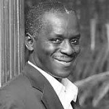

Murefu Barasa, Principal Partner
Murefu is an experienced renewable energy consultant having completed assignments for various clients spanning both the public and private sector. These include the World Bank Group, UN agencies, Government of Kenya (Ministry of Energy), Government of Tanzania (Ministry of Energy and Minerals), Government of Rwanda (Ministry of Infrastructure), British American Tobacco among others. He was the operations manager at Camco Clean Energy and has worked for the African Development Bank (Tunis) and Practical Action (Nairobi). He is also an active participant in the United Nations Framework Convention on Climate Change (UNFCCC) negotiations and has a wealth of knowledge on climate finance, clean development mechanism (CDM), Nationally Appropriate Mitigation Actions (NAMA) and carbon accounting. Murefu holds a BSc in Environmental Studies from Kenyatta University (Kenya) and a Masters in Environmental Science from Yale University (USA). He is the Managing Partner at EED.
Edith Bosire, Principal Partner
Edith has a wealth of experience in natural resource management, environmental policy planning, environmental assessments and carbon asset management. She is a seasoned consultant and has held senior management positions at Camco Clean Energy, NIRAS consulting and the Ecotourism Society of Kenya. Edith is a pioneer in environmental policy planning for private sector agro-processors having managed the environment portfolio for a large horticultural organization with over 10,000 employees. She is a Chevening Scholar, holds a BA in Geography from Baraton University (Kenya), a Masters in Water and Environmental Management from Loughborough University (UK) and is trained in applied environmental economics at the Imperial College London (UK)
Andrew Amadi, C.E.O-EED Energy Limited
Andrew is the Managing Director of EED Energy Limited which is an affiliate company of EED Advisory. He is an ERC (Energy Regulatory Commission) licensed energy auditor and energy manager with over 15 years of active experience. He has worked as an expert exclusively in environment, renewable energy and energy efficiency-related sectors in East and Southern Africa. Andrew has implemented over 200 energy audits for large energy consumers including Safaricom, East Africa Portland Cement, Mater Hospital, Kenya Defense Forces, East Africa Breweries, Kenya Petroleum Refinery, Standard Chartered Bank among others. He has designed and implemented energy efficiency projects using the performance based contract approach and developed sustainable energy policy for public and private sector organizations including the Energy Regulatory Commission. Andrew is a recipient of the prestigious Energy Legend award (2011) from the Association of Energy Engineers (USA). He is an Engineer by training and holds a Bachelor’s degree in Process Engineering (Moscow State Academy of Fine Chemical Technology, Russia).
Beth Mburu, Senior Partner
Beth is passionate about advancing climate compatible development with a strong bias on Africa, and more so, among small-scale farmer communities. She has led research on the impacts of climate change among small-communities in Kenya assessing various aspects including food security, policy and governance, benefit sharing mechanisms and emerging opportunities. Beth's analytical and project management skills are harnessed from previously held professional and consulting positions with the International Fund for Agriculture and Development (IFAD), Innovations for Poverty Action (IPA) and the Equity Group Foundation. Beth is a recipient of the prestigious International Peace Scholarship by the USA Philanthropic Education Organization. She holds a BSc in Chemistry from the University of Nairobi (Kenya), a Masters in Environmental Management from Yale University (USA) and is currently a doctoral candidate and research fellow at Carleton University (Canada)
Crystal Okudo, Senior Analyst
Crystal is a trained energy industry professional with both regional and global experience. Prior to joining EED Advisory, Crystal was a project leader at Wood Group PSN, Aberdeen UK where, among others tasks, she designed a risk management framework for the energy extractive industry. Before this she worked as a financial consultant in Nairobi where she successfully carried out business valuations and financial analysis for over 50 public and private sector clients. Crystal is experienced in both quantitative and qualitative risk impact analyses, project valuations using modern stochastic models and advanced financial modelling. Her aim is to leverage both her finance and energy backgrounds to support investments within the energy sector in Africa while providing solutions that advance access to modern energy. She is an active member of the Energy Institute and has attended and participated in a variety of energy industry conferences and workshops in Europe. Crystal has a BSc degree in International Business and Finance from the United States International University (Kenya) and an MSc in Energy Management from the Robert Gordon University (UK).
Beryl Ajwang', Analyst
Beryl is an environmental engineer with practical experience in bio-energy systems design. She led the concept development of a biogas plant operated with feedstock from fish processing waste along the shores of Lake Victoria. This plant was to solve the twin problems of waste management and energy deficiency. Beryl has worked with the Kenya Bureau of Statistics and the Pan Africa Research services providing data and intelligence management services. She currently supports the provision of energy management solutions for large energy users, development of waste to energy (W2E) projects and capacity development of clients in various topics including energy efficiency, climate change and energy policy. She holds a BSc in Environmental and Bio-systems Engineering from the University of Nairobi (Kenya).
Brian Kinuthia, Analyst
Brian is a mechanical engineer with a keen interest smart energy management systems development. He has provided energy services for various clients including the design of a carbon dioxide (R-744) based cool-room refrigeration systems for Coca-Cola (Rift Valley bottlers), installation of electro-static precipitator for East African Portland Cement Company, maintenance of the boilers and cold-rooms for Sarova Stanley Hotel among others. He currently supports the development of smart-energy monitoring systems for large energy users, provides intelligence on innovative energy efficiency enhancers and assists in the implementation of long-term energy management contracts. Brian holds a BSc in Mechanical Engineering from Jomo Kenyatta University of Agriculture and Technology (Kenya).
Kevin Wafula, Analyst
Kevin is an electrical and electronics engineer committed to advancing access to modern and affordable energy through innovative enterprise based solutions. He is a co-founder Wake Energy Limited – a company that designs solar based public lighting products and services and was incubated at the Kenya Climate Innovation Centre. Kevin also worked in the technical department of Plexus Energy assisting in design, installation and maintenance of power backup solutions, solar water heaters and solar PV systems. He brings a wealth of technical experience in renewable energy systems design and project management support to EED Advisory. Kevin holds a BSc degree in Electrical and Electronic Engineering from the University of Nairobi (Kenya).
Bettirose Ngugi, Analyst
Kevin is an electrical and electronics engineer committed to advancing access to modern and affordable energy through innovative enterprise based solutions. He is a co-founder Wake Energy Limited – a company that designs solar based public lighting products and services and was incubated at the Kenya Climate Innovation Centre. Kevin also worked in the technical department of Plexus Energy assisting in design, installation and maintenance of power backup solutions, solar water heaters and solar PV systems. He brings a wealth of technical experience in renewable energy systems design and project management support to EED Advisory. Kevin holds a BSc degree in Electrical and Electronic Engineering from the University of Nairobi (Kenya).